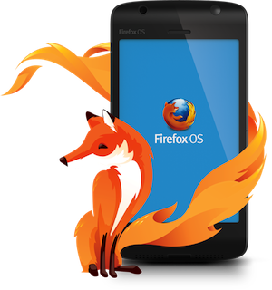
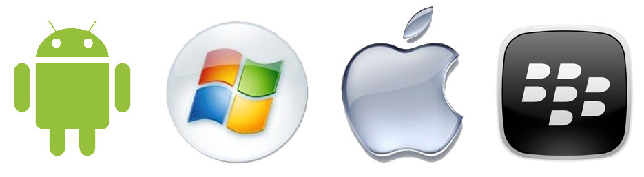
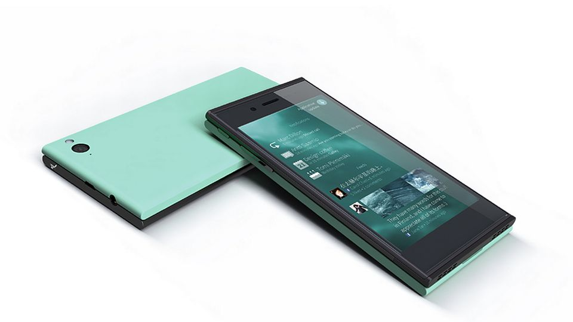
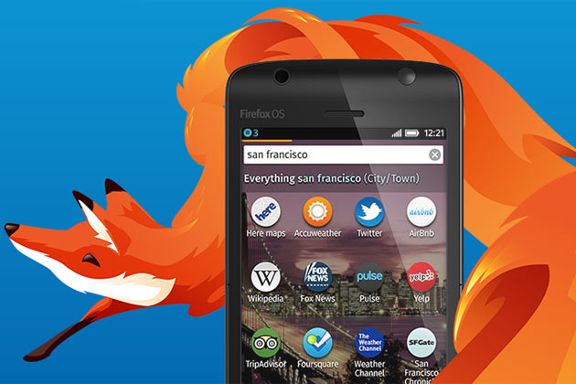
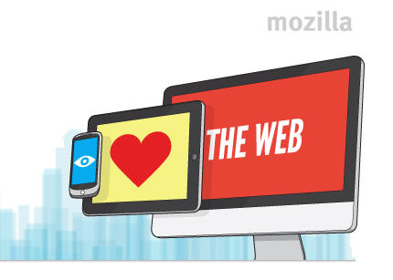
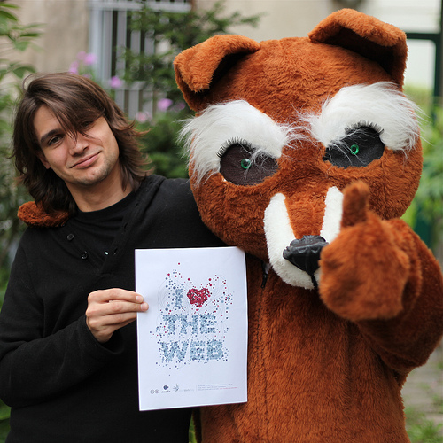
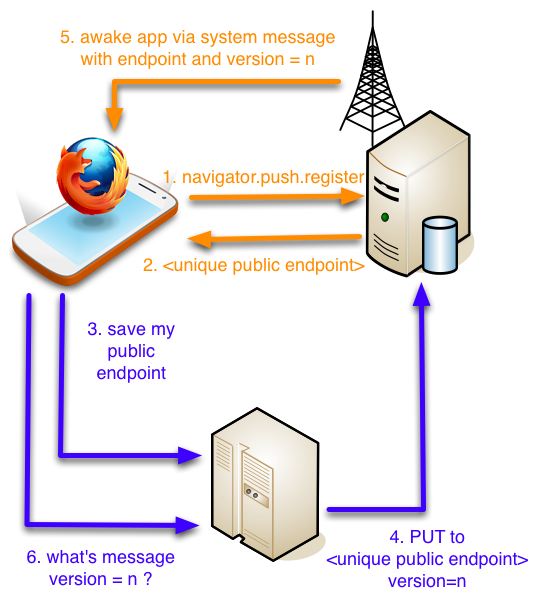
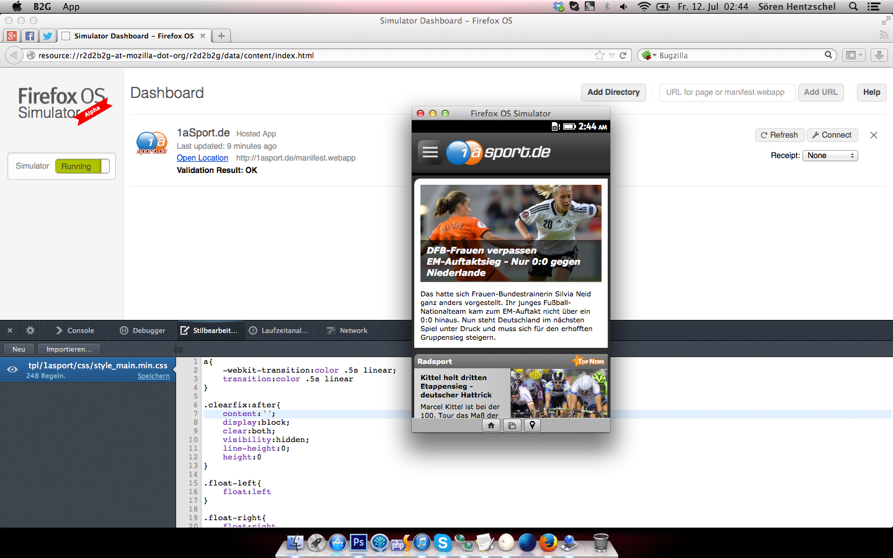
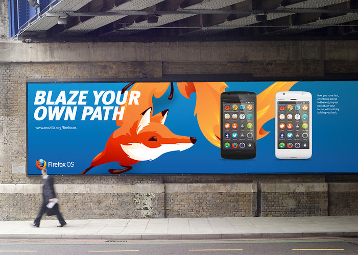

HACKED.io
Hands on
FirefoxOS

Follow this presentation:
http://bit.ly/ffos-hackedio
Hello!
Francisco Jordano
@mepartoconmigo
arcturus
Please remember this:
2013
Remember 2013
The first HACKED.io
Remember 2013
The year she is becoming great grandmother
Remember 2013
The year of the change
Remember 2013
The change of the mobile world ...

Remember 2013
The year of the alternatives
Remember 2013
... more than one alternative!

Remember 2013
... the year of Firefox OS

The FirefoxOS road trip
Just two years ago we had this crazy idea
The FirefoxOS road trip
The web now lives in our pocket
The FirefoxOS road trip
Let's create a phone based on Web technologies

The FirefoxOS road trip
Born to make the web a better place
The FirefoxOS road trip
Now it's not a prototype any more
The FirefoxOS road trip
Has been launched in Spain
The FirefoxOS road trip
... and Poland
Hands on Firefox OS
How we do create web apps for Firefox OS?

This sounds familiar
Define your Web App
manifest.webapp
{
"version": "1",
"name": "Firefox OS Boilerplate App",
"launch_path": "/Firefox-OS-Boilerplate-App/index.html",
"description": "Boilerplate Firefox OS app with example use cases to get started",
"icons": {
"64": "/Firefox-OS-Boilerplate-App/images/logo64.png",
"128": "/Firefox-OS-Boilerplate-App/images/logo128.png"
},
"developer": {
"name": "Robert Nyman",
"url": "http://robertnyman.com"
},
"installs_allowed_from": ["*"],
"default_locale": "en",
"permissions": {
"desktop-notification": {
"description" : "To show notifications"
},
"geolocation": {
"description" : "Marking out user location"
}
}
}
application/x-web-app-manifest+json
... just that?
Almost! We can choose how to distribute our web apps
Hosted apps: All your files belongs ... to your self
Packaged apps: You pack everything you need on a zip file that lives on the phone
New set of Web APIs
To power you apps, to give you control over new hardware!
Of course to be standarised by W3C
Dialer api
var call = navigator.mozTelephony.dial('555-333-222-666');
call.onconnected = function onConnected(evt) {
console.log('Better start to speak now');
};
call.ondisconnected = function onDisconnected(evt) {
console.log('Call too long, dude, your bill is getting a bit crazy');
};
call.onerror = function onError(evt) {
console.log('This is embarrassing');
};
SMS api
var sms = navigator.mozMobileMessage.send('555-333-222-666',
"Mum I'm OK, I finished all the vegies");
sms.onsucces = function onSuccess(evt) {
console.log('Now your mum can go to sleep happy');
};
sms.onerror = function onError(evt) {
console.log('Problems ahead');
};
Device Storage api
var deviceStorage = navigator.getDeviceStorage('/books');
var request = deviceStorage.get('Gone With The Wind.ebook');
request.onsuccess = function onSuccess(evt) {
//request.result is an File object ...
};
var request = deviceStorage.delete('horrible_profile_photo.jpg');
request.onerror = function onError(evt) {
console.log('Deal with it dude');
}
Offline/Online detection
Not new but pretty useful on a mobile device
var amIOnline = navigator.onLine;
document.body.addEventListener('offline', function onOffline(evt) {
alert('Hello dear user, you lost your connection');
});
document.body.addEventListener('online', function onLine(evt) {
alert('We are back in business!');
})
Proximity Sensor
Don't hang up the phone with your beard
window.addEventListener('userproximity', function(event) {
if (event.near) {
// let's power off the screen
navigator.mozPower.screenEnabled = false;
} else {
// Otherwise, let's power on the screen
navigator.mozPower.screenEnabled = true;
}
});
Web Activities
Asking for a contact
var activity = new MozActivity({
name: 'pick',
data: {
type: 'webcontacts/contact'
}
});
activity.onsuccess = function onSuccess() {
var contact = this.result;
console.log(contact.name);
};
Payments!
(even integrated with user bills in some countries, and now testeable through simulator)
var request = navigator.mozPay([signedJWT1, signedJWTn]);
request.onsuccess = function onSuccess() {
console.log('Payment succesfully completed \o/');
};
request.onerror = function onError() {
console.log('Upps! This is embarrassing');
}
Identity!
Integration with Mozilla Persona
var currentUser = 'bob@example.com';
navigator.mozid.watch({
loggedInUser: currentUser,
onlogin: function(assertion) {
console.log('Hello ' + currentUser);
},
onlogout: function() {
console.log('We are alone and devastated');
}
});
https://developer.mozilla.org/en-US/docs/Persona/Quick_setup
Desktop Notifications
var notification = createNotification('My App', 'My Message');
notification.show();
notification.onclick = function (){};
Example application
Push Notifications
\o/ Working in version 1.1!!
var req = navigator.push.register();
req.onsuccess = function(e) {
var endpoint = req.result;
console.log("New endpoint: " + endpoint );
}
req.onerror = function(e) {
console.log("Error getting a new endpoint: " + JSON.stringify(e));
}
window.navigator.mozSetMessageHandler('push', function(e) {
console.log('My endpoint is ' + e.pushEndpoint);
console.log('My new version is ' + e.version);
});
Example application
Push Notifications
\o/ Working in version 1.1!!

Lots of new APIS
Track them:
Tools?
I would start getting my hands on a browser
Preferable Firefox Nightly, but use the one you feel more confortable with.
Where to start?
Take a look to Firefox OS Boilerplate App by Rober Nyman
https://github.com/robnyman/Firefox-OS-Boilerplate-App
or @Rumyra's Pocket Kitten
The Firefox OS simulator
Version 4.0

Frameworks?
The Web, doesn't have a framework
There are thousands of web frameworks, use your favourite one!
If you want to check the design principles followed in the phone, check http://buildingfirefoxos.com
Even more tools
Thanks to @ladybenko we have the power of modern tools

Even more tools
Screencast of the yeoman generator
Web App Distribution
Again breaking the way the market works
Freedom for the developer and the user
var request = navigator.mozApps.install("http://robnyman.github.com/Firefox-OS-Boilerplate-App/manifest.webapp");
request.onsuccess = function() {
// great - display a message, or redirect to a launch page
};
request.onerror = function() {
// whoops - this.error.name has details
};
Web App Distribution
But still keeping the traditional model
Thank you!

Questions?